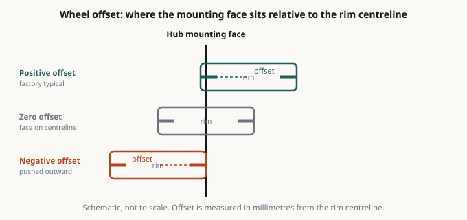
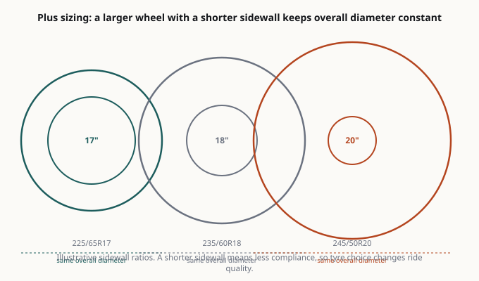

CarModReview
Especificaciones publicadas. Fuentes citadas. Sin cifras inventadas.
Información de piezas para quien quiere saber qué es realmente un producto antes de comprarlo.
Ver guías · Sobre nosotros · Cómo se financia el sitio

Cómo se elaboran estas guías
Cada guía parte de fuentes publicadas, no de impresiones. Leemos la documentación del fabricante — tablas de compatibilidad, pares de apriete, condiciones de garantía — y ponemos las cifras lado a lado, indicando de dónde sale cada dato.
Aquí no se presenta ninguna cifra de banco de potencia ni medición propia sin citar la fuente en la página. Cuando una afirmación no se puede verificar con una fuente primaria, la guía lo dice en lugar de repetirla como un hecho. La mayor parte del contenido de piezas repite el marketing del fabricante como si fuera una prueba independiente; esa es la diferencia que importa.

Qué encontrará
Guías de compatibilidad y compra — offset, índice de carga, rigidez de muelle, compuesto de pastilla, diámetro de escape. Los números que deciden si una pieza funciona, explicados sin la capa de marketing.
La realidad de la instalación — lo que la documentación no cuenta: tornillería agarrotada, pasos que dan por hecho un elevador, pares de apriete que difieren entre el manual y el foro. La parte que determina si un trabajo lleva una tarde o un fin de semana.
Comparación de especificaciones — cifras publicadas lado a lado, con la fuente indicada en la página.

Categorías
| Llantas y neumáticos | Offset, índice de carga, medidas, igualación de diámetro en 4x4 |
| Suspensión | Nivelación, elevación, muelles vs coilovers, corrección de geometría |
| Motor y admisión | Aire frío, filtración, cuidado del MAF, ganancias reales vs prometidas |
| Escape | Cat-back vs axle-back, zumbido, materiales, legalidad |
| Frenos | Compuestos de pastilla, elección de disco, líquido, asentamiento |
| Reprogramación | Flash vs piggyback, la realidad de la garantía, registro de datos |
Nuestra promesa sobre el dinero
Ganamos comisiones de afiliación. La comisión nunca decide si algo se recomienda ni en qué posición se clasifica. Algunas piezas que valoramos mucho no nos pagan nada; algunas que pagan bien son las que le decimos que se salte. Divulgación completa →
Categorías
Llantas y neumáticos
Escape
Motor y admisión
- La reprogramación explicada: flash, piggyback y standalone, y la conversación sobre la garantía
- Admisión de aire frío: qué hace, qué no hace y el problema del MAF